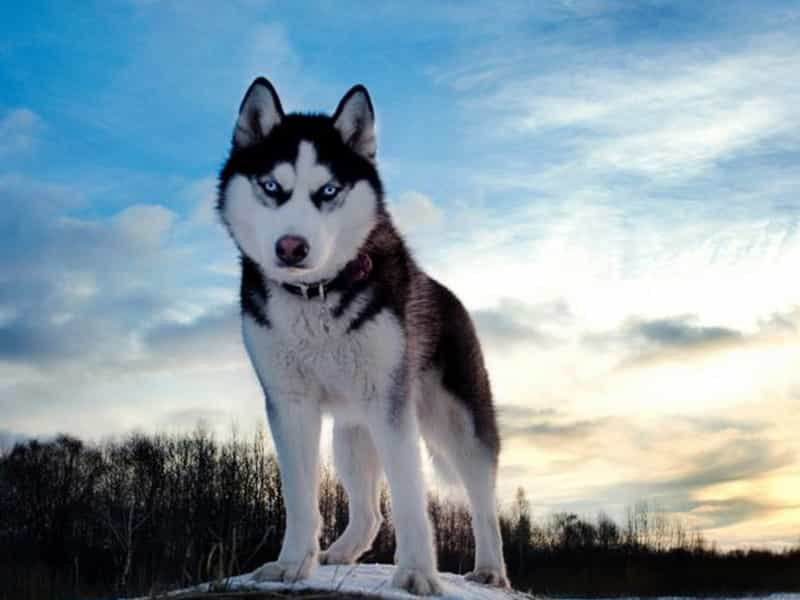

Chó Husky :
Chó Husky Sibir (Tiếng Nga: сибирский хаски, "Sibirsky hasky", Phiên âm: "hất-s-ki") là một giống chó cỡ
trung thuộc nòi chó kéo xe có nguồn gốc từ vùng Đông Bắc Sibir, Nga. Xét theo đặc điểm di truyền, chó Husky
được xếp vào dòng Spitz. Chó Husky có hai lớp lông dày, tai dựng hình tam giác và thường có những điểm nhận
dạng khác nhau trên lông.
Chó Husky là giống chó rất ưa thích vận động do tổ tiên của chúng sống ở một trong những nơi lạnh giá nhất như Siberia, ở đây chó Husky nguyên thủy được phối giống bởi người Chukchi ở Đông Bắc Á nhằm mục đích kéo xe hàng trên một quãng đường dài trong điều kiện lạnh giá khắc nghiệt. Giống chó này được đưa tới Alaska trong thời kì khai thác vàng ở Nome rồi sau đó trở nên phổ biến ở Hoa Kỳ và Canada. Ban đầu Husky được nuôi để làm chó kéo xe nhưng về sau chúng trở thành thú nuôi trong gia đình.
Lông của Husky
Lông của giống Husky dày hơn đa phần lông các giống chó khác gồm 2 lớp, một lớp lông dày và ngắn lót phía trong và một lớp lông mỏng hơn, dài hơn bao phủ bên ngoài giúp bảo vệ chúng khỏi cái lạnh khắc nghiệt vùng băng giá. Chúng có thể chịu được cái lạnh từ −50 đến −60 °C (−58 đến −76 °F). Chó husky thay lông tơ thường xuyên, nếu sống cùng con người thì cần chải lông hàng tuần.
Chó Husky Sibir có rất nhiều màu lông khác nhau nhưng hầu hết sẽ có chân, mõm, đốm cuối đuôi là lông trắng. Thường gặp nhất là Husky có màu lông đen-trắng, sau đó là nâu (đỏ)- trắng, xám (phấn) - trắng, trắng, và màu lông hiếm "agouti".
Mắt của Husky Sibir
Mắt chó Husky hình quả hạnh nhân đặt cách nhau vừa phải và hơi xếch lên. Màu mắt cũng đa dạng như xanh da trời, xanh nước biển, màu hổ phách, xanh lá cây, hoặc nâu. Một số con có thể có 2 mắt với mỗi mắt là một màu khác nhau. Cũng có thể có một hoặc cả hai mắt có màu pha trộn (parti-colored) nửa xanh nửa nâu. Tất cả những màu mắt nêu trên đều được chấp nhận là mắt của Husky "thuần chủng".